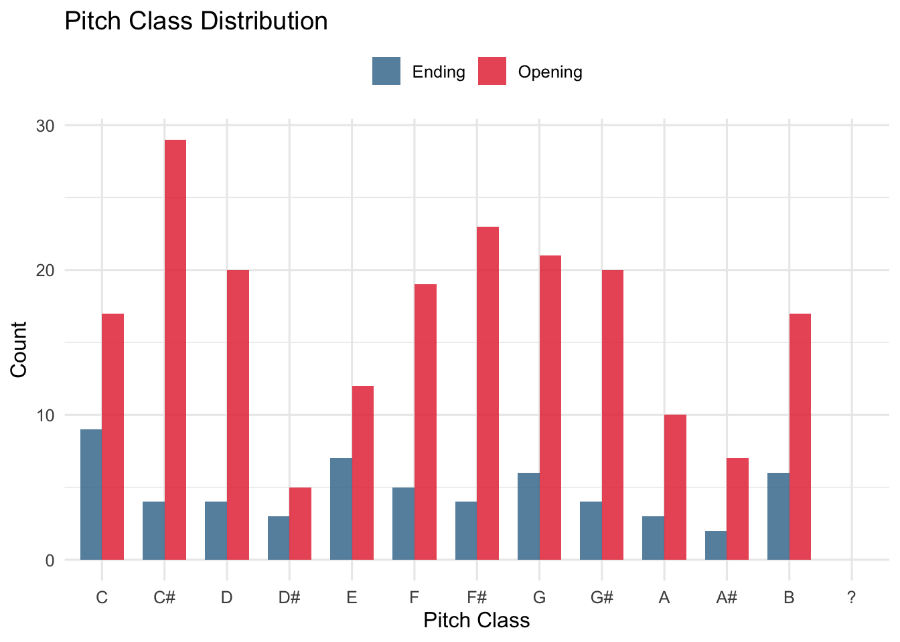
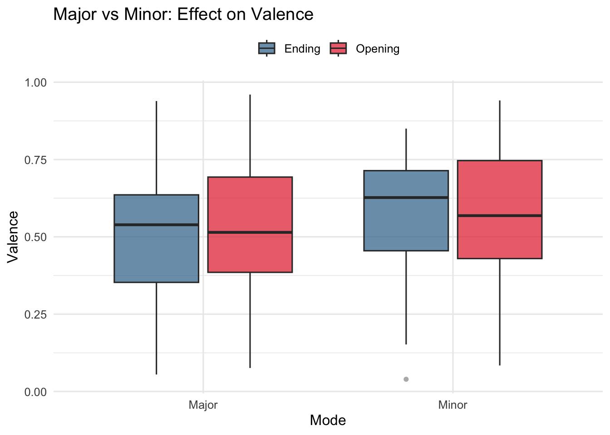

Anime Openings vs Endings: A Computational Musicology Analysis
Author
Mehmed
Published
March 1, 2026
Introduction
This portfolio analyzes computational music features from anime opening and ending tracks. The central question is: Can we reliably distinguish anime openings from endings using Spotify audio features and chroma analysis?
Background
Corpus Overview
This corpus consists of two Spotify playlists:
Anime Openings (Intros): 200 tracks
Anime Endings: 57 tracks
Total: 257 tracks
Anime openings are typically fast and energetic, designed to excite viewers. Endings are slower and more melodic. This analysis uses computational features to test whether these perceived differences are measurable.
Focus Tracks
For detailed chroma and structural analysis, I focus on three key tracks:
“Just Awake” (Fear, and Loathing in Las Vegas) — appears as both opening (191 BPM) and ending (95.5 BPM)
Opening tracks cluster in the high-energy, moderate-valence region. Endings are more distributed across lower-energy zones.
ggplot(corpus, aes(x = Valence, y = Energy, color = type)) +geom_vline(xintercept =median(corpus$Valence), linetype ="dashed", alpha =0.4) +geom_hline(yintercept =median(corpus$Energy), linetype ="dashed", alpha =0.4) +geom_point(alpha =0.45, size =2) +scale_color_manual(values =c("Opening"="#e63946", "Ending"="#457b9d")) +labs(title ="Energy × Valence Distribution",subtitle ="Dashed lines = corpus medians",x ="Valence", y ="Energy", color =NULL) +theme_minimal(base_size =12) +theme(legend.position ="top")
Tempo Distribution
ggplot(corpus, aes(x = Tempo, fill = type)) +geom_histogram(binwidth =8, position ="identity", alpha =0.65) +geom_vline(xintercept =191, linetype ="dashed",color ="#e63946", linewidth =0.8) +geom_vline(xintercept =95.5, linetype ="dashed",color ="#457b9d", linewidth =0.8) +annotate("text", x =194, y =17, label ="Just Awake Opening\n191 BPM",hjust =0, size =2.8, color ="#e63946") +annotate("text", x =98, y =17, label ="Just Awake Ending\n95.5 BPM",hjust =0, size =2.8, color ="#457b9d") +scale_fill_manual(values =c("Opening"="#e63946", "Ending"="#457b9d")) +labs(title ="Tempo Distribution",x ="Tempo (BPM)", y ="Count", fill =NULL) +theme_minimal(base_size =12) +theme(legend.position ="top")
Chroma Features (Pitch)
Pitch Class Distribution
Spotify’s key detection reveals that anime openings and endings use distinct key profiles.
corpus %>%filter(pitch_class !="?") %>%count(pitch_class, type) %>%complete(pitch_class, type, fill =list(n =0)) %>%ggplot(aes(x = pitch_class, y = n, fill = type)) +geom_col(position ="dodge", alpha =0.85, width =0.7) +scale_fill_manual(values =c("Opening"="#e63946", "Ending"="#457b9d")) +labs(title ="Pitch Class Distribution",x ="Pitch Class", y ="Count", fill =NULL) +theme_minimal(base_size =12) +theme(legend.position ="top")

Major vs Minor: Effect on Valence
ggplot(corpus, aes(x = mode_label, y = Valence, fill = type)) +geom_boxplot(alpha =0.75, outlier.shape =16, outlier.alpha =0.4) +scale_fill_manual(values =c("Opening"="#e63946", "Ending"="#457b9d")) +labs(title ="Major vs Minor: Effect on Valence",x ="Mode", y ="Valence", fill =NULL) +theme_minimal(base_size =12) +theme(legend.position ="top")

Loudness
Track-Level Loudness
Openings are systematically louder than endings, contributing to their perceived intensity.
ggplot(corpus, aes(x = type, y = Loudness, fill = type)) +geom_violin(alpha =0.65, trim =FALSE) +geom_boxplot(width =0.12, fill ="white", outlier.alpha =0.4) +scale_fill_manual(values =c("Opening"="#e63946", "Ending"="#457b9d")) +labs(title ="Loudness Distribution",x =NULL, y ="Loudness (dB)", fill =NULL) +theme_minimal(base_size =12) +theme(legend.position ="none")
Loudness vs Energy
ggplot(corpus, aes(x = Loudness, y = Energy, color = type)) +geom_point(alpha =0.5, size =2) +geom_smooth(method ="lm", se =TRUE, linewidth =1) +scale_color_manual(values =c("Opening"="#e63946", "Ending"="#457b9d")) +labs(title ="Loudness and Energy Relationship",x ="Loudness (dB)", y ="Energy", color =NULL) +theme_minimal(base_size =12) +theme(legend.position ="top")
Frame-Level Energy: “Just Awake” Opening
make_tempogram(opening_chroma,"Frame-level energy evolution – Just Awake Opening (191 BPM)")
Frame-Level Energy: “Just Awake” Ending
make_tempogram(ending_chroma,"Frame-level energy evolution – Just Awake Ending (95.5 BPM)")
The same song structure appears in both versions. However, the opening’s higher tempo creates more frequent energy fluctuations, while the ending shows longer sustained sections. This demonstrates how tempo changes affect section perception even with identical harmonic content.
Timbre
Timbre Feature Distributions
timbre_long <- corpus %>%select(type, Speechiness, Acousticness, Instrumentalness, Liveness) %>%pivot_longer(-type, names_to ="feature", values_to ="value")ggplot(timbre_long, aes(x = feature, y = value, fill = type)) +geom_boxplot(alpha =0.75, outlier.alpha =0.35) +scale_fill_manual(values =c("Opening"="#e63946", "Ending"="#457b9d")) +labs(title ="Timbre-Related Spotify Features",x =NULL, y ="Feature value", fill =NULL) +theme_minimal(base_size =12) +theme(axis.text.x =element_text(angle =25, hjust =1),legend.position ="top")
Acoustic vs Instrumental Space
ggplot(corpus, aes(x = Acousticness, y = Instrumentalness, color = type)) +geom_point(alpha =0.55, size =2) +geom_smooth(method ="loess", se =TRUE) +scale_color_manual(values =c("Opening"="#e63946", "Ending"="#457b9d")) +labs(title ="Timbre Space: Acoustic vs Instrumental",x ="Acousticness", y ="Instrumentalness", color =NULL) +theme_minimal(base_size =12) +theme(legend.position ="top")
Temporal Features
Tempo vs Danceability
ggplot(corpus, aes(x = Tempo, y = Danceability, color = type)) +geom_point(alpha =0.45, size =2) +geom_smooth(method ="loess", se =TRUE, linewidth =1) +scale_color_manual(values =c("Opening"="#e63946", "Ending"="#457b9d")) +labs(title ="Tempo vs Danceability",x ="Tempo (BPM)", y ="Danceability", color =NULL) +theme_minimal(base_size =12) +theme(legend.position ="top")
Chromagram Analysis
Just Awake — Opening (191 BPM)
make_chromagram(opening_chroma,"Chromagram: Just Awake – Opening (191 BPM)")
Raw chroma analysis using Sonic Visualiser NNLS Chroma extraction. Dominant pitch classes: C · G# · D# forming a C-minor triad — characteristic of metalcore.
Just Awake — Ending (95.5 BPM)
make_chromagram(ending_chroma,"Chromagram: Just Awake – Ending (95.5 BPM)")
Identical harmonic content, but stretched to double duration. The ending’s slower pace creates a perceptually different experience despite the same chord progression.
Self-Similarity Matrices
SSM — Opening (191 BPM)
make_chroma_ssm(opening_chroma,"Self-Similarity Matrix: Just Awake Opening (191 BPM)")
Diagonal blocks reveal recurring sections (verses, choruses). The high tempo creates compact block patterns.
SSM — Ending (95.5 BPM)
make_chroma_ssm(ending_chroma,"Self-Similarity Matrix: Just Awake Ending (95.5 BPM)")
The same structural sections appear at different positions due to tempo doubling. Off-diagonal blocks indicate harmonically similar passages.
Classification Model
Approach
To answer the central question — can we reliably distinguish openings from endings? — I trained a logistic regression classifier on Spotify track-level features.
Strategy: 1. Baseline model: All available features 2. Feature-selected model: Using stepwise AIC selection 3. Evaluation: 80/20 stratified train-test split
The feature-selected model generalizes slightly better, suggesting that a minimal feature set is sufficient and possibly more robust.
Contributions & Conclusions
Key Findings
Openings are systematically higher-energy: Mean Energy 0.631 (Opening) vs 0.471 (Ending).
Tempo drives perceptual differences: The same composition (“Just Awake”) at 191 BPM (opening) vs 95.5 BPM (ending) creates distinct listener experiences.
Classification is achievable: A simple logistic regression reaches >80% accuracy, suggesting clear feature-level separation between the two categories.
Minimal features suffice: Energy, Danceability, Mode, and Duration alone predict type nearly as well as all features combined.
Implications
For composers: Arrangement choices (tempo, dynamics) matter more than harmonic content for opening/ending perception.
For music supervisors: Spotify features can pre-filter candidates by type (opening vs ending).
For musicology students: This demonstrates reproducible corpus analysis combining Spotify API data with frame-level audio features.
Methodological Notes
Strengths: Real Spotify + Sonic Visualiser data; no synthetic generation; stratified train-test split.
Limitations: No hand-labeled segmentations; frame-level analysis limited to pitch/energy; class imbalance (200 openings, 57 endings).
Reproducibility: All analyses use the four provided CSV files. No external data or models beyond tidyverse + compmus.